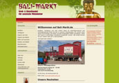

References - Referenzen
Projekt: Intaria - Einrichtungen
Website: www.intaria.de
-
Gestaltung des Internetauftrittes und dessen Umsetzung mittels CMS
-
Erstellung eines speziell auf den Kunden zurechtgeschnittenen Templates
-
Erstellung aller Referenzfotos für den Kunden

Projekt: Balimarkt Pirna
Website: www.bali-markt.de
-
Gestaltung des Internetshops und dessen Umsetzung mittels xt:Commerce Veyton
-
Anbindung an das Warenwirtschaftsystem
-
Erstellung eines speziell auf den Kunden zurechtgeschnittenen Templates
-
Erstellung aller Produktfotos für den Kunden
-
SEO & SEM
Projekt: Conciergeservice Pirna
Website: www.conciergeservice-pirna.de
-
Inhaltliche und grafische Gestaltung des Internetauftrittes, sowie dessen Umsetzung mittels CMS Joomla.
-
Erstellung eines speziell auf den Kunden zurechtgeschnittenen Templates
-
Entwurf und Umsetzung eines Faltflyers
Projekt: Möbel & Interieur by Vivere
Website: www.vivere-moebel.de
-
Inhaltliche und grafische Entwicklung des Internetauftrittes, dessen Umsetzung mittels CMS Joomla.
-
Erstellung eines auf den Kunden zugeschnittenen Templates
-
Gestaltung von Printanzeigen, Flyer, Werbemittel, Buswerbung und Messestände
-
Suchmaschinenoptimierung
-
Fotografie diverser Produkte
Projekt: Wellness & Beauty auf Rügen
Website: www.wellness-beauty-ruegen.de
-
Inhaltliche sowie grafische Gestaltung des Internetauftrittes und dessen Umsetzung als CMS
-
Erstellung eines speziellen Templates
-
Erstellung verschiedener Fotos für den Kunden